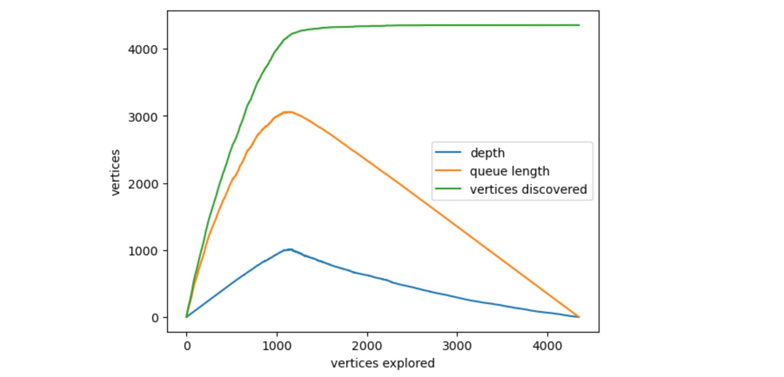

I was dealing with an optimization problem in positive dimensions with linear constraints, and it occured to me it would be useful to find all the vertices of the polytope created by the constraints. My optimization method required some rejection sampling, so finding the tightest bounding box would make things more efficient, and I could get the lower and upper bounds for each dimension by enumerating all the vertices and finding the highest and lowest values.
Now, unfortunately, an upper bound for the number of vertices is given by the number of ways that of the constraint and variable=0 hyperplanes intersect, . Constraints here also include upper and (nonzero) lower bounds. In my problem, I had 11 dimensions and 23 constraints, so 286,097,760 basic solutions. In most cases though, the vast majority of these intersections will not fall within the feasible space.
A bad solution: check each vertex
One way to find all vertices (feasible solutions) of the polytope, is to enumerate all intersection points, check if they are feasible, and return all the feasible ones as. This is, of course, very dumb. For my dummy problem on my laptop it predicted it would take about an hour and I got bored, it won’t scale at all.
An actual solution: depth-first search using simplex-inspired methods
If we have a linear objective function over the space, then the simplex method is a way to traverse vertices (feasible solutions) in a greedy way that will eventually end up at the optimal vertex. Now we don’t have an objective function, but we can steal the ideas to do the vertex traversal.
Finding feasible solutions
Let’s notate that our linear system is described as , where is our matrix encoding the inequalities.
The way this works is to associate a new slack variable with each of the constraints, where . So we now have variables. We choose a basis set of variables, and set the remaining variables to 0, this corresponds to a vertex of those intersecting hyperplanes. You can get the values for the basis variables by constructing a new matrix (tableau) that appends , and doing a row reduction that sets your basis variables to the identity matrix, and reading the right-most "" column.
Now we just need to worry about feasibility. This will occur if we have at least variables equal to 0, and the remaining variables being non-negative, so either the original variables or the slack is positive, so we exist in the constrained space. If we assume our starting point is already feasible, then there are variables we can move into the basis, swapping for a basic variable, to traverse to a new vertex. This means increasing a variable from 0 to a nonnegative value. We can increase the value until the first basic variable becomes 0 (after which we will leave the feasible region). We pick that one as the basic variable to pivot out, and we do that swap. So for each vertex, we can construct pairs of variables to switch in/out of the basis.
Cool, now we just need an initial feasible point. We can do this by pretending we have a linear objective function (e.g. just sum the value of the variables), and finding the “optimal” solution with an existing solver.
Depth-first search
We could do a number of search algorithms, but the most efficient one will incorporate the fact that doing a change of basis between neighbors is MUCH cheaper than doing a new row reduction for each new feasible set of basis variables. So each time we explore a neighbor, we pass in the preceeding tableau and do a muich smaller change. If we consider the vertices as nodes in a graph, with neighboring vertices having edges between them, then we can conduct a breadth/depth first search across the entire graph until we’ve hit everything.
The problem with breadth-first is that we might need to keep a large number of these tableaus in memory depending on the size of the system. Depth-first gives us the opportunity to explore a path til exhausted then start chucking them out, potentially reducing the maximum size of the queue.
However, we can expect the structure of this graph to be highly connected, each vertex has neighbors, so it’s quite a regular, interconnected shape. It would be easy to construct a path that visits almost all nodes. So we call a vertex “discovered” if we know that it exists, and “visited” if we traverse to it, find it’s solution and discover its neighbors. So this is a kind of hybrid depth/breadth search. traversal to a vertex is done from the first vertex that discovers it.
traverse_vertex(vertex):
- find values for variables at vertex
- for each neighbor
- if neighbor is undiscovered
- add neighbor to discovered set
- add neighbor to traversal list for this vertex
- if neighbor is undiscovered
- for each neighbor in traversal list
- traverse_vertex(neighbor)
We just need to pass in a root vertex we can get from a solver, then we’re good to go. We can escape some extra time complexity issues by ensuring we use hash maps where possible, e.g. checking against the set of discovered vertices.
Testing it out
I ran it on a variables, linear constraints problem. There are 286,097,759 possible vertices, of which only a tiny minority should be feasible. This algorithm was able to find all 4352 feasible vertices in 18 seconds on my M2 macbook.
We can inspect the run through logging the depth, number of discovered nodes, and number of nodes in the queue at each new vertex traversal. Here it is for this problem. Code for getting the plot is at the end.

Python Code
import numpy as np
import pandas as pd
from scipy.optimize import linprog
import sympy as sp
from copy import copy
class CornerFinder:
def __init__(self, A, b):
self.A = A
self.b = b
self.m, self.n = A.shape
self.variables = [
"x"+str(i+1).zfill(len(str(self.n))) for i in range(self.n)
] + [
"s"+str(i+1).zfill(len(str(self.m))) for i in range(self.m)
]
self.vertices=[]
self.discovered = set()
self.vertex_df = pd.DataFrame()
self.queue_length = 1
self.depth = 0
self.queue_length_list = []
self.depth_list = []
self.discovered_list = []
def find_corners(self):
root_tableau = self._get_root_tableau()
root_basic_variables = frozenset(root_tableau.index)
self.discovered.add(root_basic_variables)
self._traverse_vertex(root_tableau)
self.vertex_df = pd.DataFrame(
np.array(self.vertices)[:,:self.n],
columns=self.variables[:self.n]
)
def _get_root_tableau(self):
"""
Artificially set a linear objective function to find a feasible solution
"""
A = self.A
b = self.b
m = self.m
n = self.n
variables = self.variables
result = linprog(c=[-1 for _ in range(n)], A_ub=A.tolist(), b_ub=b.tolist())
slack_values = (b - A @ result.x).round(10)
basic_variables = [
x for i, x in enumerate(variables[:n]) if result.x[i] > 0
] + [
s for i, s in enumerate(variables[n:]) if slack_values[i] > 0
]
nonbasic_variables = [v for v in variables if v not in basic_variables]
tableau = np.zeros((m, n + m + 1))
tableau[:, :n] = A
tableau[:, n:n + m] = np.eye(m)
tableau[:, -1] = b
tableau = pd.DataFrame(tableau, columns=variables+["b"])
tableau = tableau[basic_variables + nonbasic_variables +["b"]]
reduced_matrix, basis = sp.Matrix(tableau).rref()
tableau = pd.DataFrame(
reduced_matrix.tolist(),
columns=tableau.columns,
).astype(float)
# redefine in case there are less than m variables in the basis
basic_variables = tableau.columns[list(basis)]
tableau.index = basic_variables
tableau = tableau.loc[[v for v in variables if v in basic_variables],variables+["b"]]
return tableau
def _get_neighbor_pivots(self, tableau):
"""
Get the n pairs of variables to pivot in/out of the basis
"""
basic_variables = [v for v in self.variables if v in tableau.index]
nonbasic_variables = [v for v in self.variables if v not in tableau.index]
neighbor_pivots = []
for nonbasic_variable in nonbasic_variables:
ratios = tableau['b'].div(tableau[nonbasic_variable].clip(0))
basic_variable = ratios.idxmin()
neighbor_pivots.append((basic_variable, nonbasic_variable))
return neighbor_pivots
def _get_solution(self, tableau):
"""
Read the values of the variables from the given tableau
"""
solution = []
for v in self.variables:
if v in tableau.index:
solution.append(tableau.loc[v, "b"])
else:
solution.append(0)
return solution
def _traverse_vertex(self, tableau):
"""
Recursive depth-first search to explore all vertices
"""
# increase depth level for logging
self.depth += 1
# log depth, queue length, and discovered vertices
self.depth_list.append(self.depth)
self.queue_length_list.append(self.queue_length)
self.discovered_list.append(len(self.discovered))
# log solution
solution = self._get_solution(tableau)
self.vertices.append(solution)
# remove from queue
self.queue_length -= 1
# display progress
print(
f"vertices explored/discovered: {len(self.vertices)}/{len(self.discovered)}",
f"depth: {self.depth}",
f"queue length: {self.queue_length}",
"\t\t\t\t",
end="\r"
)
# get pivot pairs of variables to all feasible neighbors
neighbor_pivots = self._get_neighbor_pivots(tableau)
# check which neighbors are undiscovered
undiscovered_neighbor_pivots = []
for pivot_variables in neighbor_pivots:
# construct basic variable set
bv = pivot_variables[0]
nbv = pivot_variables[1]
basic_variables = [v for v in self.variables if v in tableau.index]
basic_variables.remove(bv)
basic_variables.append(nbv)
basic_variables = frozenset(basic_variables)
# check if set has been visisted
if basic_variables in self.discovered:
continue
# mark them as discovered and add to traversal responsibility for this vertex
self.discovered.add(basic_variables)
undiscovered_neighbor_pivots.append(pivot_variables)
# add all undiscovered vertices to queue
self.queue_length += len(undiscovered_neighbor_pivots)
for pivot_variables in undiscovered_neighbor_pivots:
# copy tableau
neighbor_tableau = tableau.copy()
bv = pivot_variables[0]
nbv = pivot_variables[1]
# pivot to create new tableau
pivot = neighbor_tableau.loc[bv, nbv]
pivot_row = neighbor_tableau.loc[bv]
pivot_row /= pivot
for name, row in neighbor_tableau.iterrows():
if name == bv:
continue
row -= row[nbv] * pivot_row
# rename indexes for the change in basis
neighbor_tableau = neighbor_tableau.rename(index={bv: nbv})
# order to make look nice
neighbor_tableau = neighbor_tableau.loc[
[v for v in self.variables if v in neighbor_tableau.index]
]
# recursively visit neighbor
self._traverse_vertex(neighbor_tableau)
# reduce depth at end of exploring this vertex
self.depth -= 1# Let's try it out. Ax <= b
A = np.array([
[2, 1],
[1, 1],
[0, 1],
[-1, -1],
[-1, -2],
[1,-1],
[-5, 1],
[-1, 0]
])
b = np.array([10, 8, 4, -2, -3, 2, -6, -1.6])
cf = CornerFinder(A, b)
cf.find_corners()print(cf.vertex_df)
x1 x2
0 3.000000 4.000000
1 2.000000 4.000000
2 1.600000 2.000000
3 1.600000 0.700000
4 2.333333 0.333333
5 4.000000 2.000000And if you want to print it out the plot as above
import matplotlib.pyplot as plt
plt.plot(cf.depth_list, label="depth")
plt.plot(cf.queue_length_list, label="queue length")
plt.plot(cf.discovered_list, label="vertices discovered")
plt.xlabel("vertices explored")
plt.ylabel("vertices")
plt.legend()